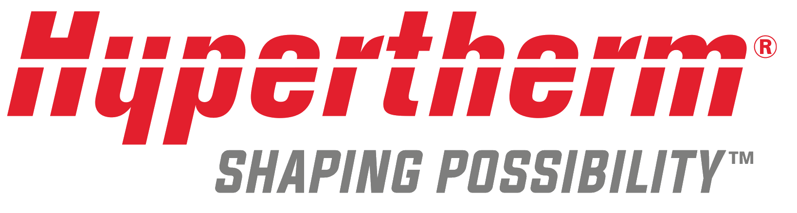
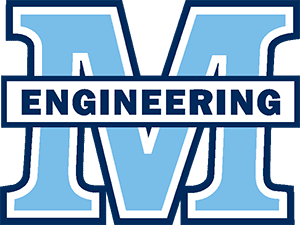

JUN 2026 — PRESENT
Mechanical Engineering Intern
Heirloom Carbon · San Francisco, CA
Joining Heirloom's mechanical team to support the design, build, and
deployment of their direct air capture systems. Refining and drafting
mechanical components in SolidWorks with a focus on improving system
efficiency and driving down the cost per ton of CO2 captured.
JAN — JUN 2026
Energy Engineering Exchange: Denmark

Technical University of Denmark (DTU) · Copenhagen, Denmark
Studied energy system analysis, renewable generation, carbon capture, sustainable design,
hydrogen energy, and photovoltaics as part of an energy engineering exchange program.
NOV 2025 — JAN 2026
Mechanical Engineering Intern

Hypertherm Associates · Lebanon, NH
Resolved critical engineering issues in prototype and post-release plasma cutting designs.
Performed technical evaluations, CAD redesigns, and experimental trials to improve
equipment reliability and efficiency, working in SolidWorks, ARAS Innovator (PDM),
AutoCAD, MATLAB, and Excel.
AUG — NOV 2025
The Stretch — Earth Sciences Field Research Program

Dartmouth · Banff, Canada to Death Valley, CA
2.5 months traversing the American West conducting geotechnical field research,
geological mapping, and environmental analysis: from glacial monitoring to
structural mapping and water-infrastructure study.
DEC 2024 — PRESENT
Student Shop Operator
Thayer Machine Shop · Hanover, NH
Trained to operate CNC mills, lathes, laser cutters, 3D printers, and casting equipment,
and to help other engineering students move from idea to design to finished product:
teaching CAD, prototyping, and machining.
NOV 2024 — JAN 2025
Student Solar Energy Intern
DIY Solar Maine · Bangor, ME
Supported a small solar business in northern Maine, shadowing site evaluations and
construction projects, providing basic technical assistance, and learning about solar
energy in rural, climate-impacted communities.
MAY — AUG 2024
Materials Research Intern

UMaine Civil & Environmental Engineering · Orono, ME
Conducted materials testing on wood under varying environmental conditions — short-term,
high-speed, stress-tension, and micro-creep testing — using Instron software and
environmental chambers. Trained on bandsaw, lathe, table saw, and disc sander.